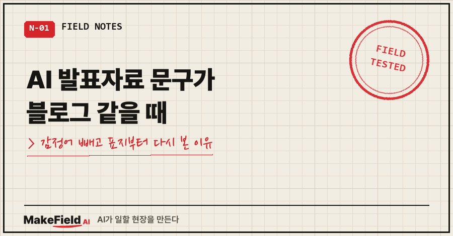
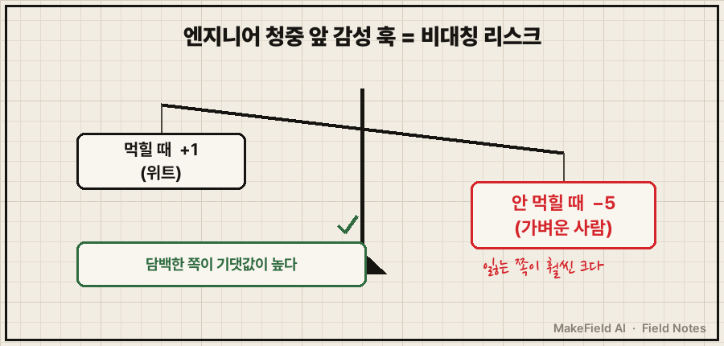
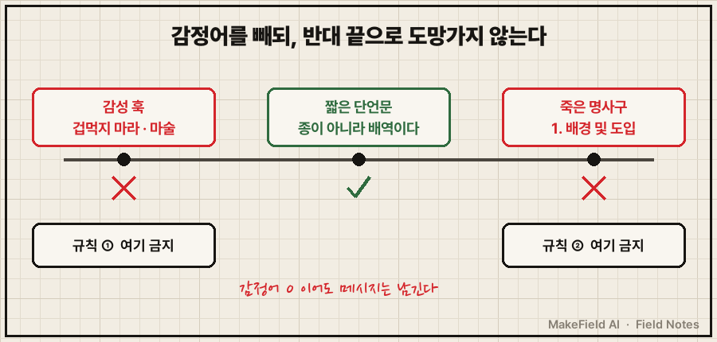
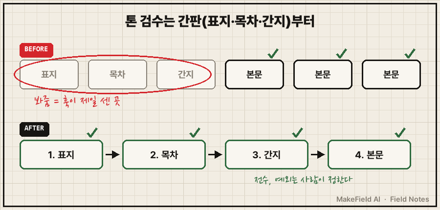

AI랑 만든 발표자료를 처음부터 쭉 넘겨 보다가, 제 입에서 나온 말은 이거였어요.
"블로거처럼 아쉽다."
틀린 내용은 없었어요. 문제는 문구였습니다.
슬라이드 곳곳에 "겁먹지 마라", "마술", "놀랍게도" 같은 말이 붙어 있었거든요.
AI 발표자료 문구가 블로그처럼 들뜰 때는, 감정어만 지우고 끝내면 안 되고 짧은 단언문으로 바꿔야 하며, 수정은 본문보다 표지·목차·간지부터 전수로 훑어야 합니다. 제 경우 배포용 65장짜리 자료가 이 기준으로 74장 개정판이 됐고, 마지막까지 남은 감정어는 본문이 아니라 표지에 있었어요.
저는 제조 현장에서 15년째 일하는 엔지니어고, 요즘은 문서·발표자료 초안을 거의 AI랑 같이 만듭니다. 이번 자료는 일하는 사람들 앞에서 "AI를 실제로 어떻게 쓰는지" 보여주는 발표용이었어요. 듣는 쪽은 의사결정자와 엔지니어가 섞여 있었고요.
1. 위트 1점을 따려다 5점을 잃는 자리
청중을 떠올려 보니 계산이 간단해지더라고요.
의사결정자와 공학도 앞에서 감성 훅은 비대칭 리스크였습니다.
잘 먹히면 위트로 1점쯤 따요.
안 먹히면 "가벼운 사람"으로 5점이 깎입니다.
따는 쪽보다 잃는 쪽이 훨씬 커요.

여기서 하나 더 걸린 게 있어요.
제가 AI에게 감성 문구를 빼라고 한 게 이번이 두 번째였습니다.
지워 놓으면 다음 수정 때 AI가 표지 부제나 마무리에 훅 카피를 또 제안하더라고요. 한 번 말로 하는 걸로는 안 멈춘다는 뜻이었어요.
2. 규칙 세 개를 세웠고, 하나는 버렸어요
그래서 말 대신 규칙으로 박았습니다. 처음 세운 건 세 개였어요.
① 감정어·훅 삭제: 겁먹다 / 마술 / 진짜 / ~하지 마라 / 놀랍게도
② 명사구 사양서로 도망 금지: "1. 배경 및 도입" 같은 죽은 제목 금지
③ 대구(A→B)는 청중이 A와 B를 둘 다 아는 자리에서만②가 중요했어요. 감정어를 빼라고 하면 AI는 금방 반대쪽 끝으로 가요. 아무 메시지 없는 명사구 목차로요. 감정어 0은 밋밋함이 아니라는 것, 이걸 규칙으로 따로 적어야 했습니다.
실제로 바뀐 문구는 이랬어요.
| 처음 AI가 쓴 문구 | 바꾼 문구 | 바뀐 점 |
|---|---|---|
| 용어에 겁먹지 마라 | 종이 아니라 배역이다 | 감정어 '겁먹다' 삭제, 단언문 유지 |
| 알아서 해주는 마술 | '알아서'가 아니라 '설계된 자율' | '마술' 삭제, 대비로 메시지 유지 |
| (피해야 할 반대 끝) 1. 배경 및 도입 | — | 메시지 없는 명사구 |
③은 곧 버렸어요. 과잉이었거든요.
듣는 사람이 공학도고, 발표는 발표자가 말로 메꾸는 매체예요. 제목이 청중보다 반 발짝 앞서가도 괜찮았습니다. 슬라이드마다 대구 위치를 따지는 건 들이는 시간에 비해 얻는 게 없었어요.

이 방향이 저만의 취향은 아니더라고요. 공학 발표 교육에서 쓰는 assertion-evidence 방식 소개 페이지에도 이렇게 적혀 있어요.
"build your presentations on succinct messages (assertions), rather than phrase topics."
간결한 단언(메시지)으로 발표를 짜고, 명사구 주제로 짜지 말라는 얘기예요. 같은 페이지는 "the phrase headline does not communicate the takeaway message"라고, 명사구 제목은 핵심 메시지를 전하지 못한다고도 합니다. (assertion-evidence.com, 2026-10-31 확인)
3. 본문을 다 고쳤는데 "제목부터 이상한데?"
다음 날 최종 지시는 짧았어요.
A담백으로 모든 내용 다 바꿔라.
감정어 0, 밋밋 극대 상관없음.AI가 전수 적용을 했고, 결과물을 본 제가 다시 말했어요.
"제목부터 이상한데?"
본문은 다 담백해졌는데 표지가 그대로였어요. "부리는 법", "한 엔지니어의 전략" 같은 표지 문구를 AI가 '콘셉트'라며 봐주고 남겨 둔 거예요.
돌아보면 이상한 일도 아니었어요. 훅이 제일 센 곳은 원래 간판이에요. 표지·목차·간지는 눈에 띄라고 만드는 자리라 AI가 감성 문구를 가장 많이 넣는 곳이고, 동시에 "여긴 예외겠지" 하고 검수에서 빠지기 제일 쉬운 곳이었습니다.

그래서 순서를 바꿨어요. 톤을 고칠 땐 표지 → 목차 → 간지 → 본문 순으로 전수로 봅니다. 예외는 하나만 남겼어요. "종이 아니라 배역이다"는 감정어가 없는 비유라 제가 승인하고 살렸습니다. 최종본은 74장이었어요.
4. AI 발표자료 문구, 넘기기 전에 보는 체크리스트
이번에 정리한 기준을 그대로 옮기면 이렇습니다.
- [ ] 감정어 검색: 겁먹다·마술·진짜·놀랍게도·"~하지 마라"가 남아 있나
- [ ] 반대 끝 검사: "배경 및 도입"처럼 메시지 없는 명사구 제목이 생겼나
- [ ] 슬라이드 제목이 한 문장짜리 주장(단언)으로 읽히나
- [ ] 표지·목차·간지를 본문보다 먼저 봤나
- [ ] 살려 둘 비유가 있다면, 사람이 직접 "이건 유지"라고 정했나
자주 묻는 질문
Q. 감정어를 다 빼면 발표가 지루해지지 않나요?
저도 그게 걱정이었는데, 지루함은 감정어가 없어서가 아니라 제목에 메시지가 없어서 생기더라고요. "종이 아니라 배역이다"는 감정어가 하나도 없는데 기억에 남아요. 명사구로만 도망가지 않으면 됩니다.
Q. AI에게 "감성 빼"라고 한 번 말하면 안 되나요?
제 경우엔 두 번을 말해야 했고, 그 뒤에도 표지에 남아 있었어요. 금지할 단어 목록과 "명사구 금지"처럼 반대 끝까지 막는 문장을 규칙으로 적어 두는 게 덜 수고로웠습니다.
Q. 블로그나 공지문 같은 다른 글에도 같은 기준인가요?
아니요, 청중에 따라 달라요. 이번 기준은 의사결정자·엔지니어가 듣는 발표라서 정한 거예요. 감성 훅이 먹히는 자리도 분명히 있어요. 중요한 건 그 자리가 어디인지 먼저 정하고 AI에게 알려 주는 쪽이었습니다.
AI가 들뜬 문구를 쓰는 건 고칠 수 있어요. 어디까지 훑어야 다 고친 건지는 사람이 정해 줘야 하고요.
석 달 전 다른 강의에서 발표자료를 41장→63장으로 갈아엎은 얘기는 AI 강의 발표자료, 41장을 63장으로 갈아엎은 이유에 적어 뒀어요. 그 글이 '무엇을 담을까'였다면, 이번 글은 '어떤 말투로 담을까'였습니다.
보고서·발표자료를 AI로 만들다 고친 기준들은 makefield.ai에서도 이어서 보실 수 있어요.
태그: #AI발표자료문구 #AI발표자료 #AIPPT #챗GPT발표자료 #발표자료제목 #슬라이드제목 #PPT제목쓰는법 #발표자료톤 #AI글티 #AI문구수정 #감정어 #보고서문체 #직장인AI #AI오답노트 #MakeFieldAI